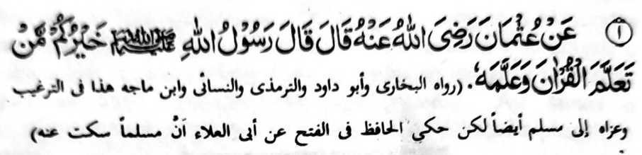
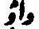

Miyakathitayan ko Uthman (Radhiallaho ‘Anho) a pitharo iyan a pitharo o Rasulollah (Sallallaho ‘Alaihi wa Sallam), “Aya taralebi rekano na so tao a piyaganad iyan so Qur’an go inipamangenda-o niyan.”
Si-i ko kadakelan ko manga kitab na giyangka-iya a Hadith na aya kiya-aloyaon na batanga a [

] (waw) (ma-ana “go”) ko pageletan o “piyaganad” go so “inipamangenda-o” sa lagid a kiya-aloy niyan sa ngkanan a miya-aloy a Hadith. Aya ma-ana niyan na so piphaporo-an a balas na bagi-an o tao a piyaganad iyan so Qur’an na oriyan niyan na inipamangenda-o niyan ko manga ped.Ogaid na si-i ko sabagi a manga kitab na giyangka-iya a Hadith na aya kiya-aloyaon na so batang a (Aw) [] (ma-ana “o di”), sa aya miyapema-ana niyan na “Aya taralebi rekano na so tao a piyaganad iyan so Qur’an o di na (so tao a) inipamangenda-o niyan (so Qur’an).”
Siyabot sangka-iya a kiyapaka-okit angka-iya a Hadith, a so balas na melagid, ma-ana zagit so tao na piyaganad iyan so Qur’an ago so tao a inipamangenda-o niyan (so Qur’an) ko manga ped a tao. Ma-ana melagid a khakowa iran a balas.
So Qur’an i bayanan o Agama a Islam, na ron misasangkot so kapakatitindeg angka-iya a paratiyaya ko kasisiyapa ago so di-i kipanolonen ko Qur’an. Sabap ro-o so kalbihan o kapaganada ago so di-i kipamangenda-on ko Qur’an na tanto a marayag sa diden kailangan o ba osaya sa tanto a matas.
Ogaid, na piphangka-pangkat so kapakalelebi niyan. Aya piphaporo-an niyan na so kapaganada ko Qur’an sa rakhes o manga ma-ana niyan ago so tafsir iyan, na aya miyakababa-baba on na so bo so kabatiya-a on.